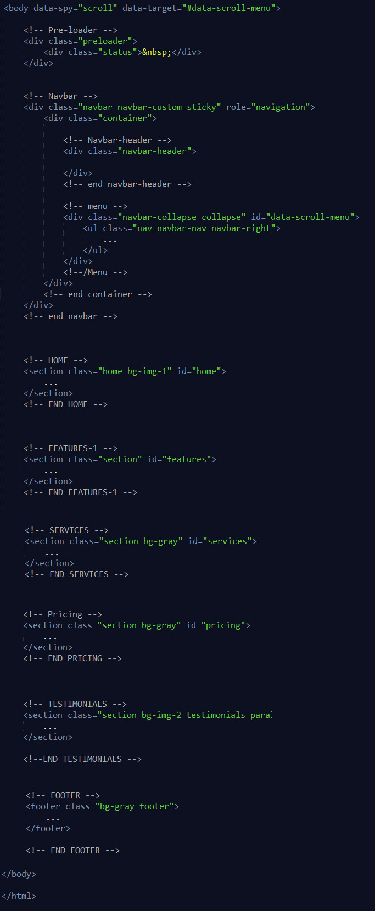

If you have any questions that are beyond the scope of this documentation, please feel free to email or contact us via my page.
Support Email: codebucks@gmail.com
Zoric is a Laravel 12 responsive multipurpose template. The template is responsive, so you can view it also in the mobile/tablets devices and it looks very nice in those devices. Zoric is retina ready that means it looks great and very sharp in high resolution devices. Zoric is a multi-purpose html template using updated latest Bootstrap v5.3.3, Laravel 12, CSS3 and JQuery. It’s fully responsive and has multiple variation for template. It’s flexible design allows to build a perfect website for business, corporate, startup, creative agency, resume, one page etc. The code is super clean, fully optimized and allows any developer to customize easily.
Please feel free to get back to me in case if you are having any question or feedback.
I have tried to follow the standards and modular structure while developing the theme. Following sections are explaining the theme File & Folder, structure, html file structure and plugins.
├── Zoric_Laravel ├── app ├── bootstrap ├── config ├── Database ├── public ├── css ├── fonts ├── images ├── js └── php ├── resources ├── CSS ├── js ├── views ├── partials ├── body.blade.php ├── footer.blade.php ├── head-css.blade.php ├── master.blade.php ├── preloader.blade.php ├── title-meta.blade.php ├── vendor-script.blade.php └── All blade.php pages ├── routes ├── storage ├── tests ├── .editorconfig ├── .env ├── .env.example ├── .gitattributes ├── .gitignore ├── artisan ├── composer.json ├── composer.lock ├── package-lock.json ├── package.json ├── phpunit.xml ├── postcss.config.js ├── README.md ├── tailwind.config.js └── vite.config.js

Files are explained below:
| File | Description |
|---|---|
bootstrap.min.css
|
Zoric uses the Bootstrap v5.3.3 The core bootstrap file is being used in all the pages. |
style.min.css
|
This file is containing all common styles for all the pages. |
Files are explained below:
| File | Description |
|---|---|
app.js
|
This is a main js file. It contains the custom JS code needed for features including layout, sidebar, etc. |
Once again thank you for your purchase. I'll be happy to answer the the questions you have related to the theme. In case if you have any suggestion or feature, request please feel free to contact me, I'll try to implement it and will release as part of future updates.
Stay Awesome!
- Codebucks
Version 1.0.0 08 April 2025
© Zoric - Design by Codebucks